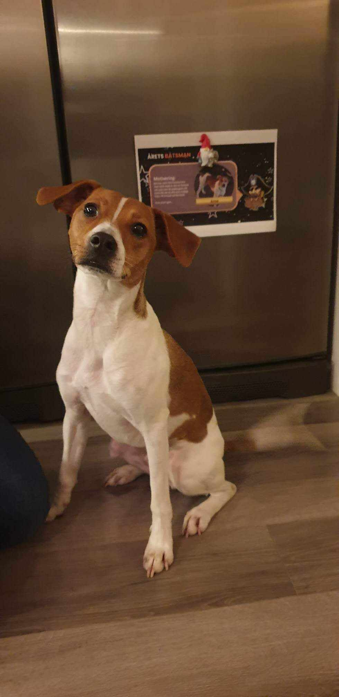

A full-stack developer at Quicksearch-Feedback Solutions in Halmstad, Sweden, I hold a Bachelor's degree in Computer Science and Engineering from the University of Halmstad.
Previously educated and worked as a chef
Passionate about writing, competitive computer gaming and long distance running
Proficient programmer, enthusiastic gamer, and trained chef
Here are a few things about me
I worked as a sous chef at a four star hotel in Tällberg, where I got the oppurtunity to cook for the king of Sweden more than once.
I have the pleasure of guest lecturing for third-year engineering students at the University of Halmstad in their REST APIs course.
Explore my works
Explore my portfolio
This website is created, owned, and maintained by me
Guest lecturer on the subject of Rest APIs for engineering students at the University of Halmstad
My bachelor's thesis on creating an Application for automated pressure measurement [Link]
A PCB simulator written in Java to simulate connections on a breadboard [Link]
Events
WeAreDevelopers Berlin 2021
CustomerGauge Amsterdam 2023
SWETUGG Gothenburg 2023
Here are a few things I've done
Left my hometown and worked as a chef, sous chef, and eventually head chef at various restaurants.
Studied computer science and engineering at the University of Halmstad, graduating with a bachelor's degree.
Landed a job as a full-stack developer at Quicksearch-Feedback Solutions after completing my master's thesis.
My fianceé and I bought our first house and our beloved dog.

Found my passion for writing and got started on my first novel, 'Dying Roses.'